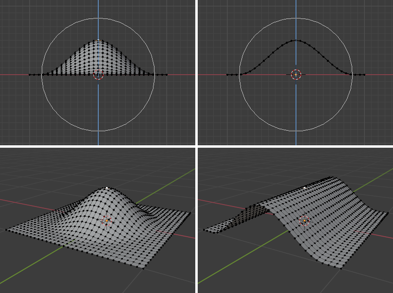

Proportional Editing is a way of transforming selected elements while also affecting
the nearby unselected elements. The farther away an unselected element is, the less it will be affected
(hence the “proportional”). This feature is very useful for smoothly deforming dense meshes.
Note
Blender also has a Sculpting workflow
that contains brushes and tools for proportionally editing a mesh without seeing the individual vertices.
You can increase or decrease the radius of the tool’s influence during a transform operation
from the Proportional Editing popover or with WheelUp/WheelDown, or PageUp/PageDown
respectively. As you change the radius, the points surrounding your selection will adjust their positions
accordingly.
Proportional Editing is typically used in Edit Mode, but it can also be used in Object Mode.
The tool then works on entire objects rather than individual mesh components.
In the image below, the leftmost cylinder is being scaled up vertically,
which also affects the cylinders near it.
When working with dense geometry, it can become difficult to make subtle adjustments
without causing visible lumps and creases in the model’s surface.
When you face situations like this, Proportional Editing can help.
Rather than using a radius only, the proportional falloff spreads via connected geometry.
This means that you can proportionally edit the vertices in a finger of a hand
without affecting the other fingers. While the other vertices are physically close (in 3D space),
they are far away following the topological edge connections of the mesh.
The icon will have a blue center when Connected is active.
This mode is only available in Edit Mode.
Projected from View
Depth along the view is ignored when applying the radius.

The difference between having “Projected from View” disabled (left) and enabled (right).
The image below shows the final render of a low-poly landscape
obtained by moving up the vertices of a triangulated grid
with Proportional Editing enabled.
{kind=link}
{kind=link}